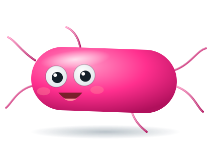
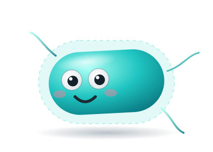
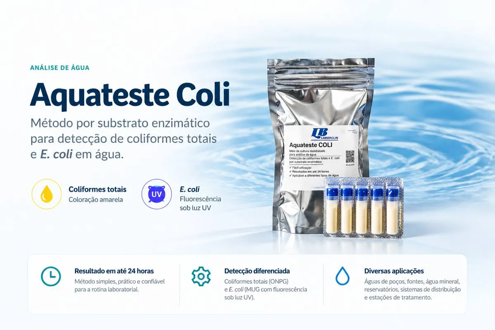
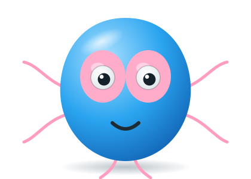

Detecção de coliformes totais e E. coli com substrato ONPG/MUG.
Uma solução para análise microbiológica de água baseada em substrato enzimático, com leitura visual para coliformes e fluorescência para diferenciação de E. coli.



Aquateste Coli
Substrato para detecção qualitativa e quantitativa de coliformes totais e E. coli em amostras de água.
Do substrato ao resultado
O princípio do método usa duas respostas enzimáticas para diferenciar os grupos de interesse.
Preparação
A amostra de água é adicionada ao meio contendo o substrato enzimático ONPG/MUG, seguindo o procedimento do fabricante.
Incubação
Após a incubação indicada, a leitura permite verificar a resposta cromogênica e a fluorescência sob luz UV.
Leitura
A coloração amarela indica atividade associada aos coliformes; a fluorescência sob UV indica a presença de E. coli.
Por que ONPG + MUG?
O método combina um indicador cromogênico e um indicador fluorogênico para tornar a leitura mais objetiva.

Para diferentes pontos de controle da água.
O fabricante indica o uso em águas de poços, fontes, água mineral, reservatórios, sistemas de distribuição e na avaliação da eficiência operacional de estações de tratamento.
Precisa escolher o método para sua rotina?
A RBio pode orientar sobre Aquateste Coli, coleta e soluções complementares para análise microbiológica de água.